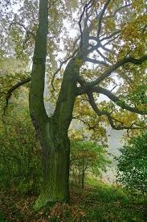

Les

Les je území hustě porostlé stromy. Odborně řečeno jde o soubor biocenóz, jehož determinantou jsou dřeviny stromového vzrůstu. Jedná se o velmi složitý ekosystém, tvořený složkou rostlinnou (fytocenóza), živočišnou (zoocenóza) a abiotickým prostředím (biotopem). Dle jisté lesnické definice je za les považováno území (lesní porost), v němž rostou dřeviny (stromy), které dorůstají minimální výšky 5 metrů a zápoje korun alespoň 25 %. Z právního hlediska k lesům patří i mýtiny jakožto místa určená pro růst lesa. Podle různých definic se pak liší i pokrytí lesy. Lesy dělíme na smíšené, listnaté a jehličnaté.
Lesy pokrývají 39 miliónů km². Největší rozlohu souše zaujímá tzv. tajga, formace jehličnatých lesů chladného pásma severní polokoule, tvořená v Evropě především různými druhy smrku, jedle, modřínu a borovic, v Asii ještě kryptomerie, tsugy, túje a cypřišky, v Severní Americe také douglasky.
Historie
První lesy se patrně objevují v devonu. Během poslední doby ledové byl biom lesů a pralesů značně menší než nyní. S růstem teplot se ale rozšířil. Zastoupení břízy bylo v Evropě na vrcholu před 10,5 tisíci lety, lísky před 9,5 tisíci lety, borovice před 8,5 tisíci lety, jilmu a jasanu před 7,5 tisíci lety, lípy před 6,5 tisíci lety, dubu před 6 tisíci lety, olše před 4 tisíci lety, habru před 3,5 tisíci lety, buku před 3 tisíci lety a smrku před 1,5 tisícem let. Za přirozený les se pak považuje například stav před 3000 lety. V Evropě však probíhalo odlesňování již v době 1000 let př. n. l. V novověku pak odlesnění Evropy vyvrcholilo. Posledních 100 let ale podíl lesů v Evropě roste. V Čechách nárůst lesů probíhal už i po celé 19. století. V současnosti stromy a keře celosvětově váží 310 gigatun uhlíku, což je přibližně 57 % veškeré biomasy. Země se stává celosvětově zelenější. Vegetace obecně ale ubírá vodu. Stromy také mohou snižovat albedo, a tak v jistých případech i ohřívat planetu.
Typy lesa dle jeho přirozenosti
Lesy je možné rozdělit také podle míry jejich přirozenosti:
Přirozený les – jde o souhrnné označení lesů původních, přírodních a přírodě blízkých.
Prales – les původní
Přírodní les
Les přírodě blízký
Nepůvodní les
Typy přirozených lesních porostů světa (lesní biomy)
Tropický deštný les
Mlžný les
Tropický střídavě vlhký les
Tvrdolistý les
Opadavý les mírného pásu
Severský jehličnatý les (tajga)
Ochrana lesů v Česku
V Česku se lesní hospodaření řídí lesním zákonem. Jeho základním principem je pokud možno nesnižovat procentuální podíl lesů v zemi. Dále předepisuje např. určitý podíl melioračních dřevin, maximální velikost holiny 1 ha (až na výjimky), nutnost nově zalesnit do 2 let od vytěžení předchozího porostu, do 5 let pak provést tzv. zajištění porostu.
Každý les je chráněn podle zákona o ochraně přírody a krajiny jako významný krajinný prvek. V praxi to znamená, že zásah do lesního porostu musí být konzultován též s příslušným orgánem ochrany přírody, především jestli nedochází k narušení krajinného rázu.
Přirozených lesů je v Česku už málo, v drtivé většině došlo k minulosti alespoň k částečným zásahům do struktury či druhového složení porostů.
Ochrana ve velkoplošných chráněných územích
Větší koncentrace porostů s významnějším podílem přirozených dřevin je v Česku v těchto velkoplošných chráněných územích:
Národní parky:
Podyjí
Chráněné krajinné oblasti:
Bílé Karpaty
Křivoklátsko
Litovelské Pomoraví
Pálava
Poodří
Ohrožení lesů
Požáry, těžba, vichřice a škůdci globálně způsobují 12 % smrtí stromů.
Myslivost Zvěř